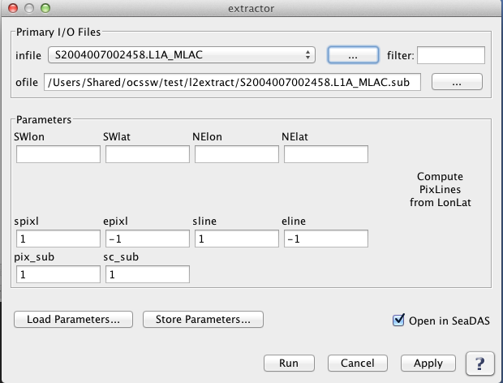

| l1aextract_seawifs | |
Creates an extracted L1A SeaWiFS file.
Tools -> OCSSW Processing -> l1aextract_seawifs
GUI for l1aextract_seawifs 
Usage: l1aextract_seawifs infile spix epix sscan escan pix_sub sc_sub outfile
where:
infile - input l1a data HDF file
spix - start pixel number
epix - end pixel number
sscan - start scan line
escan - end scan line
pix_sub - pixel subsampling rate
sc_sub - scan line subsampling rate
outfile - output file name
NOTE: Start and End pixel/scanline will be set to input file's nsamp
and nrec respectively, if, the given values are out of range